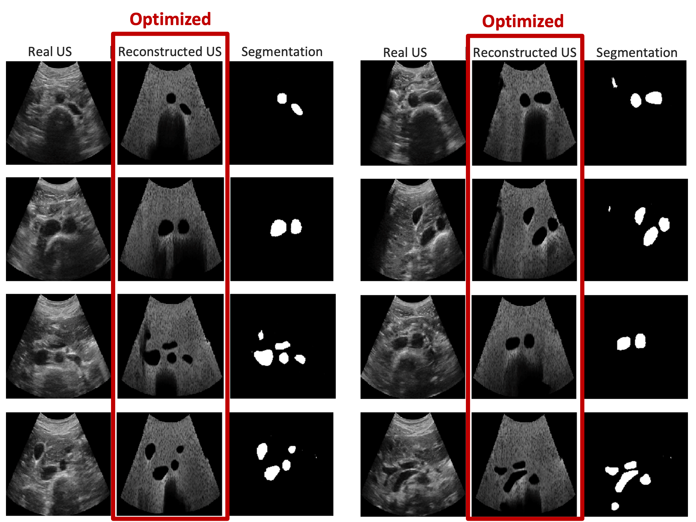

LOTUS: Learning to Optimize Task-based US representations
Yordanka Velikova, Mohammad Farid Azampour, Walter Simson, Vanessa Gonzalez Duque, Nassir Navab
MICCAI 2023 (Oral Presentation)

Abstract
Anatomical segmentation in ultrasound is critical for diagnosis and monitoring, but obtaining accurate pixel-wise annotations is both challenging and time consuming. LOTUS tackles this by learning intermediate ultrasound representations that are optimized directly for downstream tasks. Using annotated CT label maps as a simulation medium, we cast ultrasound propagation with a differentiable ray tracer, while simultaneously training segmentation and unsupervised domain adaptation networks. The renderer refines tissue parameters end-to-end, yielding optimized ultrasound simulations that better highlight target anatomy and generalize to real scans.
Presentation
MICCAI 2023 oral presentation recording.
Differentiable ultrasound renderer
Optimized image representations
LOTUS iteratively updates renderer parameters per organ-specific task, enhancing contrast for the targeted anatomy while damping distractors.
End-to-end pipeline

Results
During inference, real ultrasound frames are translated into the optimized representation before segmentation.
Citation
If you build on this work, please cite:
@inproceedings{velikova2023lotus,
title={LOTUS: Learning to Optimize Task-Based US Representations},
author={Yordanka Velikova and Mohammad Farid Azampour and Walter Simson and Vanessa Gonzalez Duque and Nassir Navab},
booktitle={Medical Image Computing and Computer Assisted Intervention (MICCAI)},
pages={435--445},
year={2023}
}